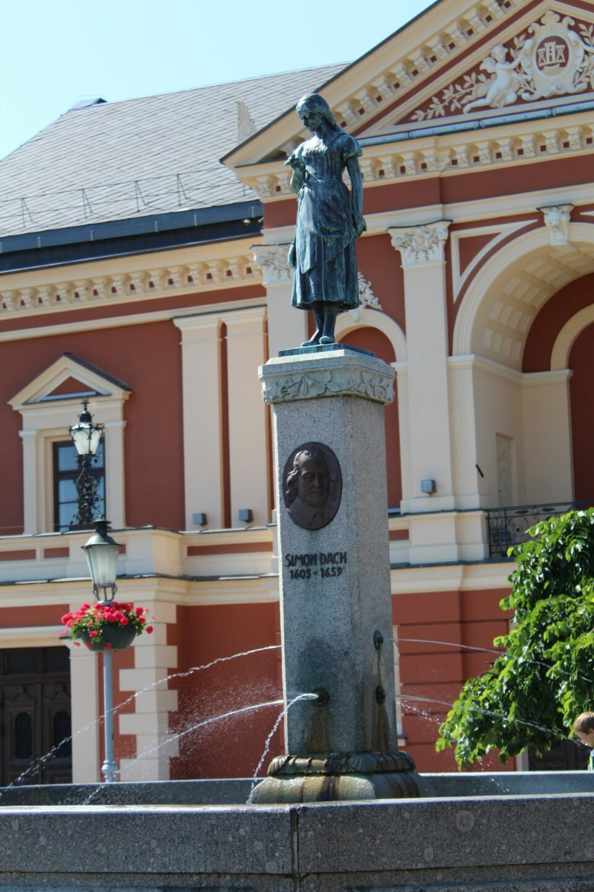
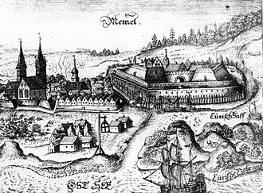

Klaipėda
Aprašymas

Klaipėda – trečias pagal gyventojų skaičių ir plotą
Lietuvos miestas, įsikūręs Vakarų Lietuvoje, Pajūrio žemumoje, ties
Kuršių marių ir Baltijos jūros santakos vieta. Miestas taip pat yra
Klaipėdos apskrities administracinis centras. Svarbiausias Vakarų
Lietuvos pramonės centras,[3] kelių, geležinkelių ir jūrų transporto
mazgas. 2019 m. pab. sudarytame savivaldybių gerovės indekso
reitinge Klaipėdos miestui teko trečia vieta.
Iš dalies dėl regioninės reikšmės turinčio neužšąlančio Klaipėdos
uosto prie Akmenos-Danės upės žiočių, miesto istorija yra sudėtinga.
1252 m. senosios kuršių gyvenvietės vietoje pastatyta Livonijos
ordino pilis, prie kurios įsikūrė miestas. Vėliau miestas priklausė
Vokiečių ordinui, Prūsijos kunigaikštystei, Prūsijos karalystei ir
Vokietijai. Po Pirmojo pasaulinio karo pagal Versalio taikos sutartį
Klaipėda ir Klaipėdos kraštas buvo atskirtas nuo Vokietijos ir po
1923 m. inscenizuoto Klaipėdos sukilimo, teritorija prijungta prie
Lietuvos. 1939 m. po vokiečių paskelbto ultimatumo Klaipėda vėl
okupuota Vokietijos. 1945 m. miestas su Klaipėdos kraštu okupuotas
Sovietų Sąjungos ir prijungtas prie Lietuvos TSR.
Eilę metų po Lietuvos Respublikos nepriklausomybės atkūrimo
Klaipėdos miesto gyventojų skaičius mažėjo dėl gyventojų persikėlimo
į Klaipėdos priemiesčius ir atokesnius kraštus. Klaipėdos miesto
gyventojų skaičius sumažėjo nuo 202,929 (1989 m. surašymas) iki
162,360 (2011 m. surašymas). Statistikos departamentui besiruošiant
2021 m. surašymui buvo pastebėta, kad nuolatinių Klaipėdos miesto
gyventojų skaičius pirmą kartą nuo 1991 m. buvo augantis. Fiksuotas
+3,92% metinis gyventojų prieaugis.
Mieste veikia keletas muziejų (žymiausias – Lietuvos jūrų muziejus),
veikia Klaipėdos dramos ir muzikinis teatrai. Žymiausi renginiai –
Jūros šventė ir Pilies džiazo festivalis, kasmet pritraukiantys daug
miesto svečių. Iš miesto nesunku pasiekti populiarius pajūrio
kurortus, pietuose esančią Nidą ar šiaurėje įsikūrusią Palangą.
Miesto globėjas – Šv. Brunonas Kverfurtietis.
Istorija
Manoma, kad baltų gyvenvietės šiuolaikinio miesto teritorijoje
gyventa jau nuo VII amžiaus. Anot XIX a. lietuvių istoriko
Konstantino Tiškevičiaus, baltai Klaipėdos prekybinį miestelį prie
Nemuno žiočių įkūrė dar iki kryžiuočių įsigalėjimo šiame regione –
jis buvo pastatytas prekių sandėliams ir kasmetiniams prekymečiams
su vokiečiais. 1252 m. šį miestą prekybos plėtros tikslais užkariavo
Vokiečių ordinas.[14] Kai kurių istorikų manymu, Klaipėdoje galėjo
būti vietinių gyventojų pastatyta pilis. Atsižvelgdamas į 1253 m.
rašytiniuose šaltiniuose randamą užuominą apie rastus lietuvių
sutvirtinimus prie Danės, Adolfas Raulinaitis iškėlė mintį, kad
anuomet šioje vietoje stovėjo mūrinė aptvarinė-gardinė pilis su
atskiru priekiniu bokštu. Juozo Jurginio įsitikinimu, minimi
sutvirtinimai byloja apie lietuvių bei žemaičių kariuomenės pylimais
sutvirtintą stovyklą, kurią šie įkūrė puldami kryžiuočius.[15]
Senovinė Klaipėdos pilies ir miesto graviūra (1684 m.)

Klaipėdos pilis įkurta 1252 m. (Memele Castrum). Gynybinio
forto statybos užbaigtos 1253 m. Memelburge įsitvirtino Livonijos
ordino kariuomenės daliniai, vadovaujami magistro Eberhardo fon
Zaino. Pilies įsteigimo dokumentus magistras Eberhardas pasirašė
1252 m. liepos 29 d., o rugpjūčio 1 d. Kuršo vyskupas Heinrichas fon
Liucelburgas. Magistras Konradas fon Tyrbergas tvirtovę panaudojo
kaip atsparos tašką tolimesniems kryžiaus žygiams prieš Žemaitiją
palei Nemuno upę. 1255 m. Memelį nesėkmingai bandė užimti sembai. Po
šio antpuolio sembai neatsigavo ir 1259 m. buvo priversti pripažinti
Vokiečių ordino viršenybę. Memelyje įsikūrė naujakuriai iš
Holšteino, Liubeko ir Dortmundo. Tuomet Memelis neoficialiai
vadintas Neu-Dortmund (liet. Naujuoju Dortmundu). Gyvenvietė tapo
pagrindiniu Kuršo vyskupijos miestu, kuriame buvo katedra ir bent
dvi parapijinės bažnyčios. Liubeko miesto teises Klaipėda gavo
1254[16] m. arba 1258[17] m. 1323 m. pavasarį ir vasarą Gedimino
vadovaujama lietuvių kariuomenė atvyko prie Nemuno ir jau užėmusi
miestą apgulė Klaipėdos pilį bei nusiaubė Sembos kraštą, tokiu būdu
priversdama ordiną spalio mėnesį pradėti derybas dėl paliaubų.
Planuojant atsakomojo puolimo kampaniją prieš Žemaitiją, 1328 m.
Livonijos ordino įgulą Memelyje pakeitė riteriai iš Prūsijos. Tačiau
lietuvių grėsmė ir išpuoliai smarkiai pakenkė miesto plėtrai: 1379
m. pilis ir miestas iki pat paribių buvo nusiaubti lietuvių, o 1389
m. miestą atstatinėję darbininkai užpulti žemaičių. 1422 m.
pasirašyta Melno taikos sutartis stabilizavo valstybinę sieną tarp
Vokiečių ordino ir Lietuvos Didžiosios Kunigaikštystės ateinantiems
501 metams. Prasidėjo aktyvesnis Klaipėdos apylinkių apgyvendinimas.
1475 m. miestui suteiktos sausumos miestams būdingos Kulmo miesto
teisės.[18] Memelis liko dalimi to, kas tapo Prūsija, o vėliau ir
Vokietija. Siena su Lietuva išliko nepakitusi iki pat 1919 m. Tai
buvo viena ilgiausiai besitęsusių sienos sutarčių Europoje, minėta
dabar jau nebegiedamame Vokietijos himno pirmajame posme Von der
Maas bis an die Memel, kuriame aprašomos vokiškų žemių sienos nuo
Maso upės vakaruose iki Nemuno upės rytuose. 
Gyventojai
Gyventojų skaičius pagal lytį: 53,58 % moterų ir 46,42 % vyrų.
Demografinė raida tarp 1985 m. ir 2023 m.
| 1985 m. |
1989 m. |
1991 m. |
1999 m. |
2001 m. |
2006 m. |
| 195 000 |
202 929 |
208 300 |
203 300 |
192 954 |
187 316 |
| 2010 m. |
2011 m. |
2020 m. |
2021 m. |
2022 m. |
2023 m. |
| 182 752 |
162 360 |
149 116 |
152 008 |
152 237 |
158 420 |
Merai
Atkurtoje Lietuvoje Klaipėda turėjusi 8 merus:
- 1990–1992 – Povilas Vasiliauskas
- 1992–1994 – Benediktas Petrauskas
- 1994–1995 – Jurgis Aušra
- 1995–1997 – Silverijus Šukys
- 1997–2000, 2000–2001 – Eugenijus Gentvilas
- 2001–2003, 2003–2007, 2007–2011 Rimantas Taraškevičius
- 2011–2015, 2015–2019, 2019–2023 – Vytautas Grubliauskas
- 2023 - dabar - Arvydas Vaitkus
Šaltinis
Apsilankykite